中学理科 生物分野（人体） 図で確認・ミニテストで実力チェック
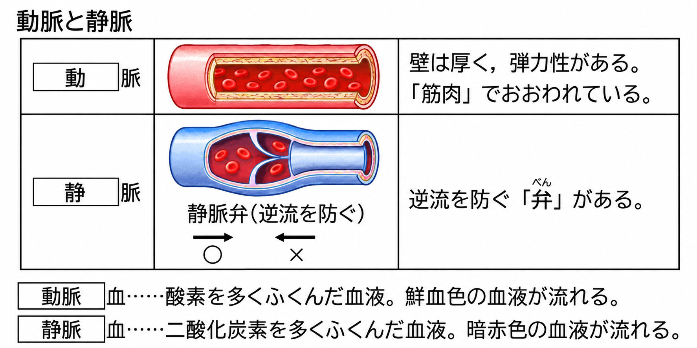
心臓から送り出される血液が流れる血管を動脈、心臓へもどってくる血液が流れる血管を静脈といいます。
| 血管 | つくり |
|---|---|
| 動脈 | かべが厚く、弾力性がある（心臓から強い勢いで送り出される血液の圧力にたえるため） |
| 静脈 | かべは動脈よりうすく、ところどころに血液の逆流を防ぐ弁がある |
動脈血…酸素を多くふくんだ血液。あざやかな赤色をしています。
静脈血…二酸化炭素を多くふくんだ血液。暗い赤色をしています。
心臓から送り出された血液が流れる血管を①、心臓にもどる血液が流れる血管を②という。②には、血液の③を防ぐ④がある。酸素を多くふくむ血液を⑤という。
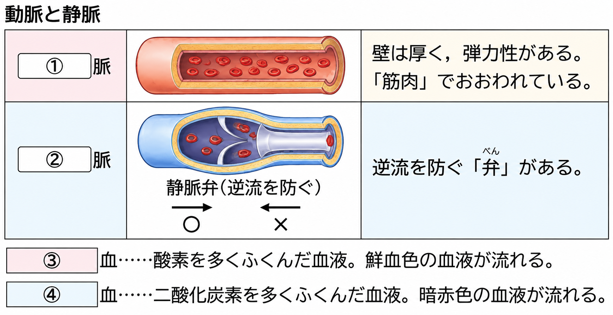
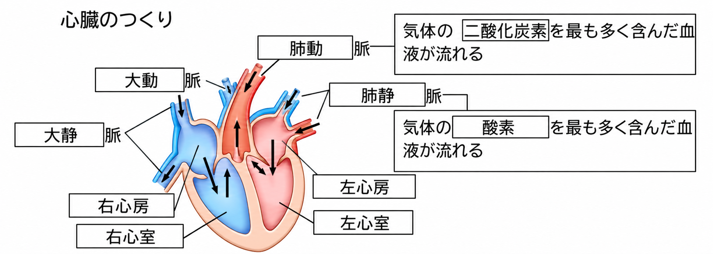
心臓は筋肉でできていて、規則正しく縮んだりゆるんだり（拍動）することで、血液を全身に送り出すポンプのはたらきをしています。
ヒトの心臓には、右心房・右心室・左心房・左心室の4つの部屋があります。
・心房…血液がもどってくる部屋
・心室…血液を送り出す部屋
| 部屋 | つながる血管 | 血液の流れ |
|---|---|---|
| 右心房 | 大静脈 | 全身からもどった血液が入る |
| 右心室 | 肺動脈 | 肺へ血液を送り出す |
| 左心房 | 肺静脈 | 肺からもどった血液が入る |
| 左心室 | 大動脈 | 全身へ血液を送り出す（かべがいちばん厚い） |
心房と心室の間などには弁があり、血液が逆流しないようになっています。
心臓の4つの部屋のうち、全身からもどった血液が入るのは①、肺へ血液を送り出すのは②、肺からもどった血液が入るのは③、全身へ血液を送り出すのは④である。かべがもっとも厚いのは⑤である。
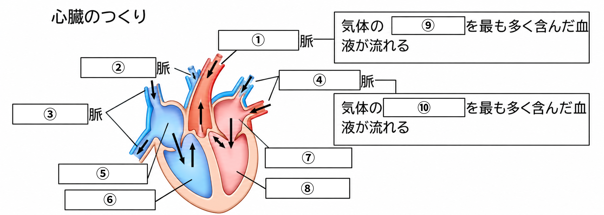
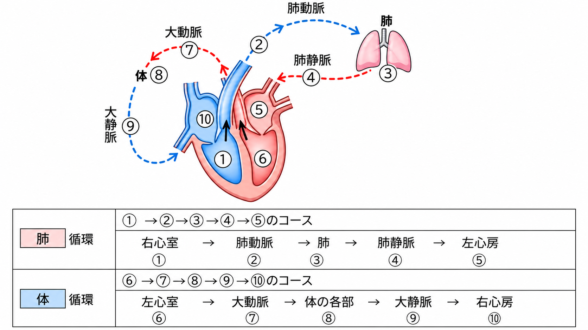
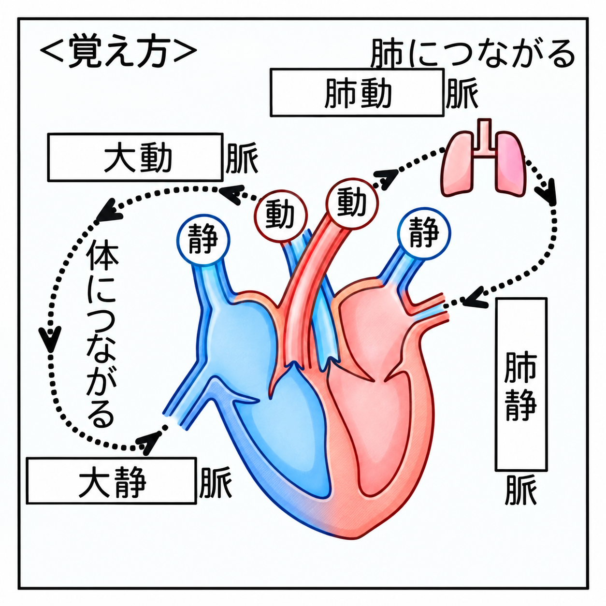
血液は、心臓から出て全身をめぐり、また心臓にもどってきます。血液の通り道は、次の2つに分けられます。
| 循環 | 血液の流れ | はたらき |
|---|---|---|
| 肺循環 | 右心室→肺動脈→肺→肺静脈→左心房 | 肺で二酸化炭素を出し、酸素をとり入れる |
| 体循環 | 左心室→大動脈→体の各部→大静脈→右心房 | 細胞に酸素と養分をわたし、二酸化炭素や不要な物質を受けとる |
・心臓から出ていく血管 → 「動脈」／心臓にもどる血管 → 「静脈」
・肺とつながる血管 → 「肺○脈」／体とつながる血管 → 「大○脈」
肺循環は、右心室→①→肺→②→左心房の順に血液が流れる。体循環は、左心室→③→体の各部→④→右心房の順に流れる。肺循環では、血液は肺で⑤をとり入れ、⑥を出す。
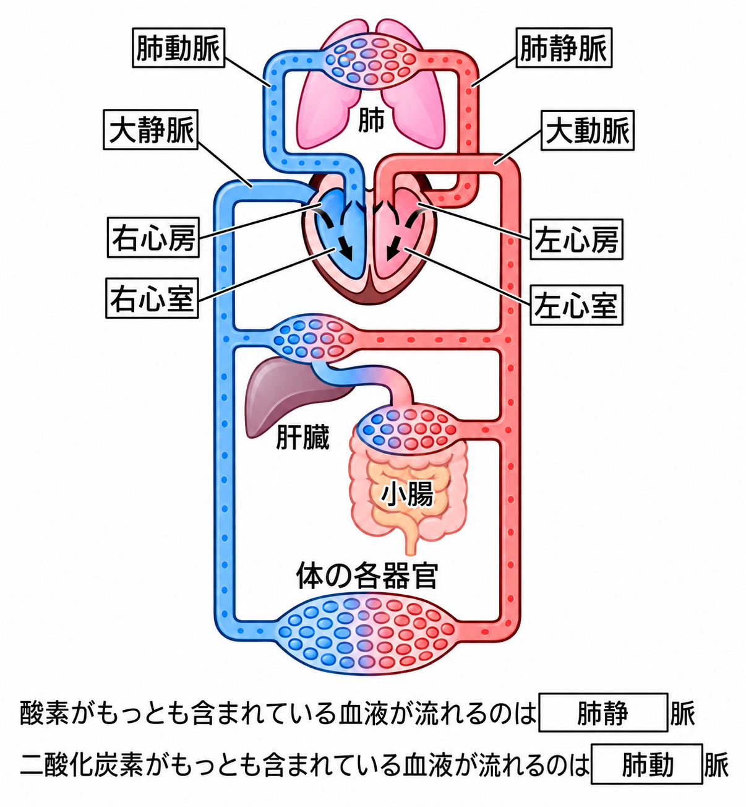
血液循環のようすを模式的に表した図をモデル図といいます。入試によく出るので、次の血管を必ず覚えましょう。
| 血液の特ちょう | 血管 | 理由 |
|---|---|---|
| 酸素が最も多い | 肺静脈 | 肺で酸素をとり入れた直後 |
| 二酸化炭素が最も多い | 肺動脈 | 全身から二酸化炭素を集めて肺へ向かう |
| 養分が最も多い（食後） | 肝門脈 | 小腸で吸収した養分を肝臓へ運ぶ |
| 尿素などの不要物が最も少ない | じん静脈 | じん臓で不要物がこしとられた直後 |
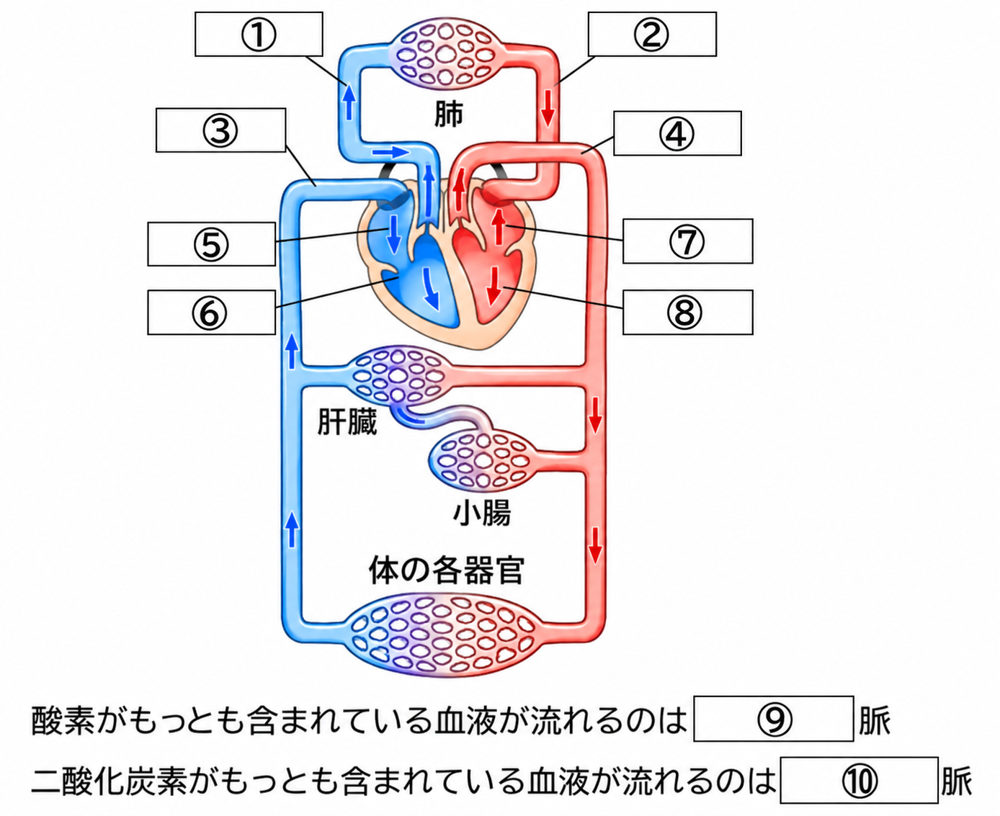
酸素を最も多くふくむ血液が流れるのは①、二酸化炭素を最も多くふくむ血液が流れるのは②である。食後、ブドウ糖やアミノ酸などの養分を最も多くふくむ血液が流れるのは、小腸から肝臓へ向かう③である。尿素などの不要物が最も少ない血液が流れるのは、じん臓から出る④である。
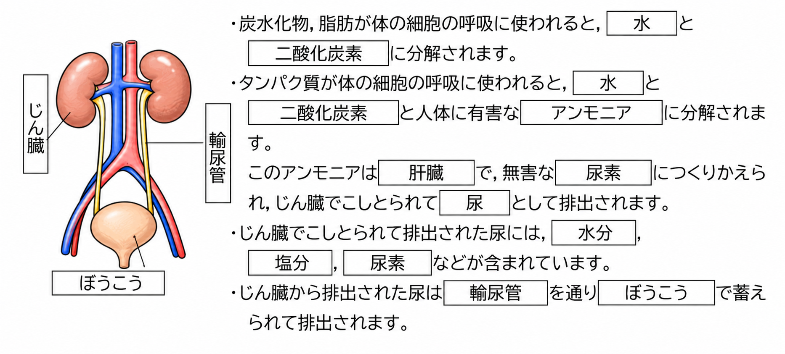
図のように、背中側の腰の上あたりに左右1対のじん臓があります。じん臓でつくられた尿は輸尿管を通ってぼうこうにためられ、体外に出されます。
細胞では、養分を分解してエネルギーをとり出しています（細胞による呼吸）。このとき、不要な物質ができます。
| 分解されるもの | できる不要な物質 | 体の外へ出す方法 |
|---|---|---|
| 炭水化物・脂肪など | 二酸化炭素と水 | 二酸化炭素は肺からはき出す |
| タンパク質 | 二酸化炭素と水、有害なアンモニア | 肝臓で害の少ない尿素に変える → じん臓でこしとり尿として出す |
じん臓は、血液中の尿素などの不要な物質や、余分な水分・塩分をこしとって尿をつくります。また、血液中の水分や塩分の量を調節しています。
尿は輸尿管を通ってぼうこうに一時ためられ、体外に出されます。不要な物質の一部は、汗として皮ふからも出されます。
タンパク質が分解されると、有害な①ができる。①は②で害の少ない③に変えられる。③はじん臓で血液からこしとられて④となり、⑤を通って⑥に一時ためられてから体外に出される。
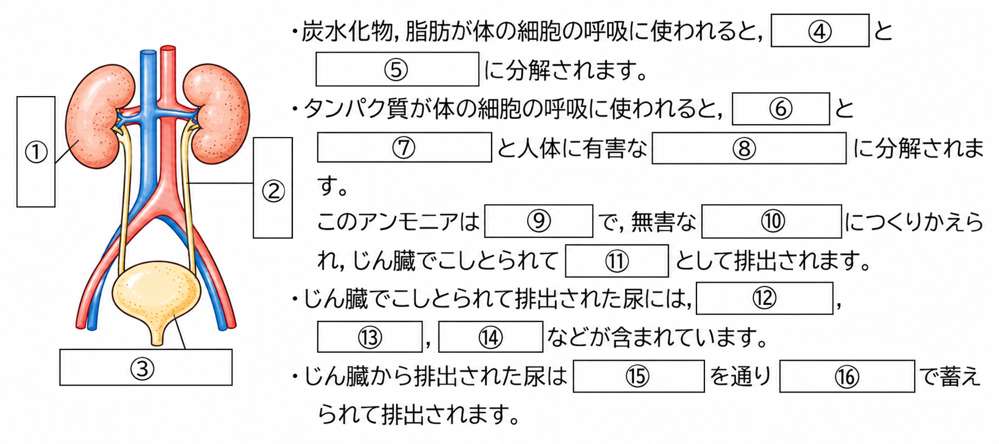
「動脈と静脈」「心臓のつくり」「肺循環と体循環」について、入試問題で確認しましょう。
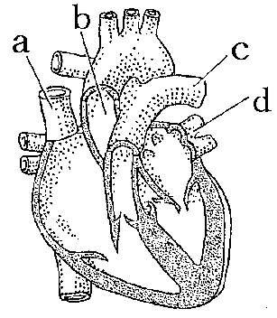
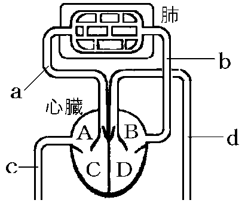
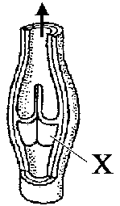
心臓から出た血液が流れる血管を①といい、体の各部から心臓にもどる血液が流れる血管を②という。これらの血管のうち、図のXの③があるのは④である。③は血液の⑤を防ぐ役割をはたしている。
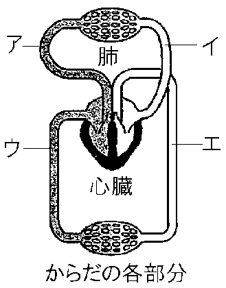
ヒトの血液循環のうち、右心室→（ア）→肺→（イ）→左心房と流れる道すじを①という。この道すじを流れる間に血液は、肺で②をとり入れて③を排出する。血液が、左心室→（エ）→からだの各部分→（ウ）→右心房と流れる道すじを④という。この間に血液は、細胞に⑤と養分をあたえ、細胞から③などの不要な物質を受けとる。
「血液循環のモデル図」「排出」について、入試問題で確認しましょう。
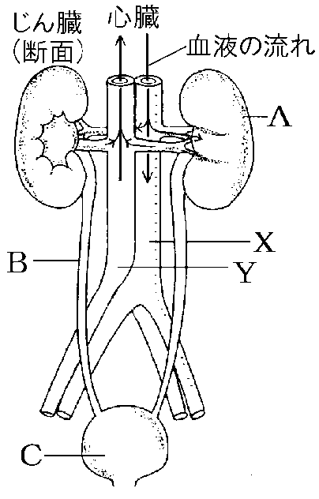
A〜Cは器官の名前、X・Yは血液の流れから考えて「動脈」か「静脈」かを答えよう。
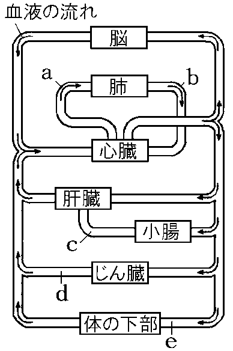
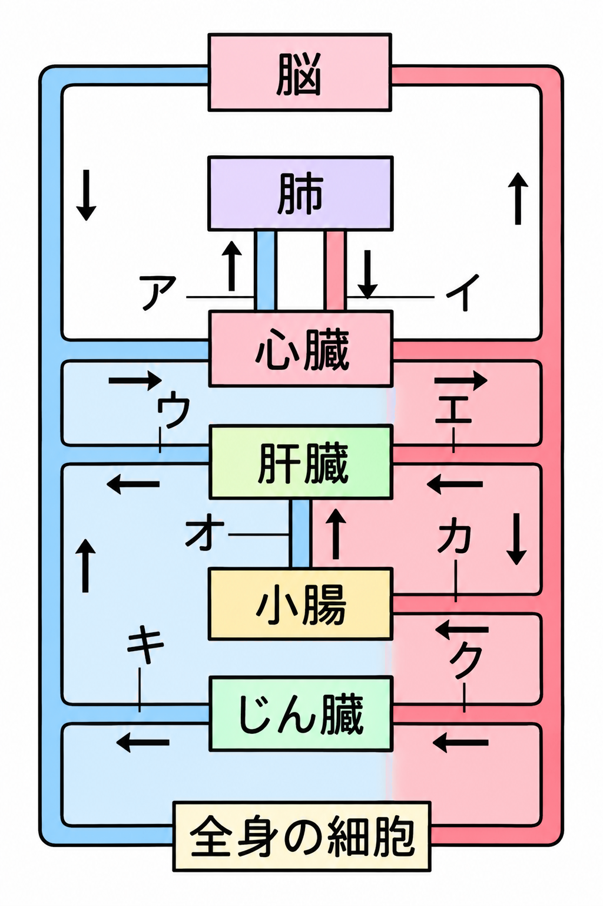
①養分を最も多くふくむ血液が流れている血管 ②酸素を最も多くふくむ血液が流れている血管 ③酸素が最も少ない血液が流れている血管 ④二酸化炭素を最も多くふくむ血液が流れている血管 ⑤アンモニアが最も少ない血液が流れている血管 ⑥尿素が最も多い血液が流れている血管 ⑦尿素などの不要な物質が最も少ない血液が流れている血管
ブドウ糖が細胞による呼吸によって分解されると、①（気体）や水ができ、タンパク質が分解されると、体に有害な②（気体）ができる。①は③という器官から体外に放出される。体に有害な②は④という器官に運ばれ、そこで⑤という毒性の少ない物質につくりかえられる。⑤などの不要な物質は⑥で血液中からこしとられて、余分な水分とともに輸尿管を通ってぼうこうにためられ、尿として排出される。